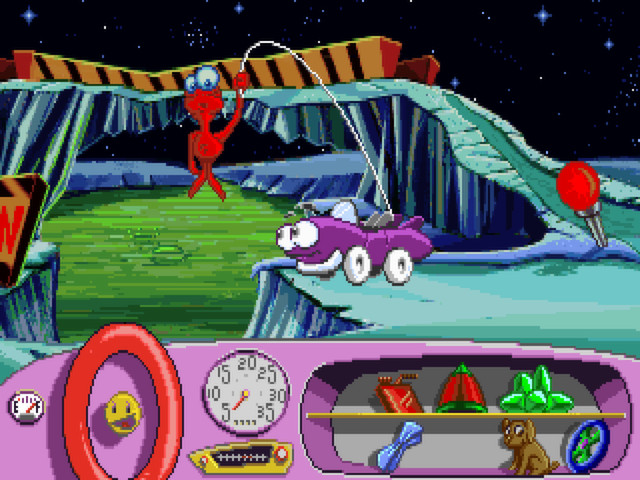

Score: 4/9
Contains overtly pro-DEI, subtly pro-climate action, subtly pro-LGBTQ+, and subtly pro-immigration messaging.
This Steam group, founded on March 16th, 2024, was created by a group of gamers dedicated to “identify[ing]” whether a game has Woke content.” The moderators define this content as “any images, messages, characters, storytelling, dialogue, music, or game mechanics that include themes associated with the left-side of the political aisle in contemporary western politics.”
Games that are reviewed are placed into three different categories. “Recommended” games have no woke themes present. The “Informational” games have woke themes, but are more subtle than the “Not Recommended” category, which have “overt messaging.” As of late 2025, their full list contains nearly 1700 titles–most of which are Not Recommended.
The goal of this project was not only to determine how many games were flagged as “woke”, but to identify the most common reasons for this rating. Using their criteria, I also assigned a score to each title based on how many categories they were flagged for, allowing me to compile a list of the “wokest” games!
Bloons Tower Defense 6, a game where you control monkeys popping waves of balloons, was classified as Woke due to “overtly pro-LGBTQ+ messaging. There is a pride flag item available in the trophy store with a pro-pride message. Psi is referred to using they/them pronouns.”
Queer content was the overwhelming reason for the “woke” rating. Many role-playing games (RPGs), like Elden Ring, were flagged for using body type A/B rather than explicitly male or female.
Contains overtly pro-LGBTQ+ messaging. Non-binary/other option available for identity in the character creation menu. Uses body type instead of male and female. Optional homosexual romance.
Contains overtly pro-LGBTQ+ messaging. Uses body type in place of biological sex during character creation.
Contains overtly pro-DEI messaging. Features an improbably diverse cast. PC is a fat guy who can somehow deep-dive and swim long distances without trouble. The sushi chef is Black.
The next highest reason was pro-DEI content, which was present in 26% of woke games and 17% of slightly woke games. Dave the Diver, an indie RPG about gathering ingredients for a sushi restaurant, was criticized for its “improbably diverse cast.”
The rest of the categories were much less prevalent, with each representing less than 5% of titles. Anti-capitalist sentiment was the third highest category for woke games (2.8%), while pro-climate action was the third highest for slightly woke games (4.2%).
Contains overtly pro-DEI, overtly pro-LGBTQ+, subtly pro-communism, and subtly anti-colonialism messaging.

Contains subtly pro-LGBTQ+ messaging. Contains subtly pro-climate action messaging. Forced cross-dressing. You start the game working for an ecoterrorism group.

Contains overtly pro-DEI, overtly anti-male, and overtly anti-patriarchy messaging.
Woke games were also more likely to be made by independent ("indie") studios than the non-woke category.
Review from the Woke Content Detector page.
"The game should obviously be labeled as "not recommended". Other gamers should not be getting tricked into buying this DEI infested garbage like me."
"It blatantly pushes:


Out of the entire list, only 388 games are recommended, meaning they contain no woke content. If you’re upset that Monster Hunter Wilds lets you choose between body types A and B, never fear; Monster Hunter World is (apparently) free of woke content! You just need to ignore the series’ overarching themes of protecting the environment and balancing the ecosystem. You can also play all of the Freddi Fish, Putt Putt, and Pajama Sam games! These children’s games make up 5% of their recommended list. Though, not everyone seems to be happy with this rating: a discussion post from a mom on Steam highlights some of the hidden woke content in “Putt Putt Goes to the Moon”.
"[A] while back I asked about what some good games were for my kids that didn’t have woke content. After reading through the comments I tried some and they seemed a little advanced for my kiddos unfortunately (ages 3 and 5). That’s when I stumbled upon these Humongous Entertainment games on the list! They seemed like exactly what I was looking for, not trying to impose anything on young minds. After playing a couple though we came to “Putt Putt Goes to the Moon” which seemed fine at first until a scene came up with a two headed alien. Each head was clearly a different sex and it left a bad taste in my mouth for sure. Clearly a “nonbionary” reference, we’ll continue trying other games but I’d recommend changing that one on the list."
While it can be fun to poke at the ridiculousness of this list, the sentiment behind these rankings is tied to damaging ideologies that are currently harming marginalized communities around the world. Far-right parties fixate on “anti-woke” politics–particularly LGBTQ+ rights–diverting attention from other policy issues and creating a moral panic. In a time when the rights and healthcare of transgender Americans are being threatened, immigrant families are keeping their children home from school to avoid being targeted by ICE, and long-standing civil rights tool are being dismantled, initiatives like the Woke Content Detector normalize discrimination and hateful rhetoric.